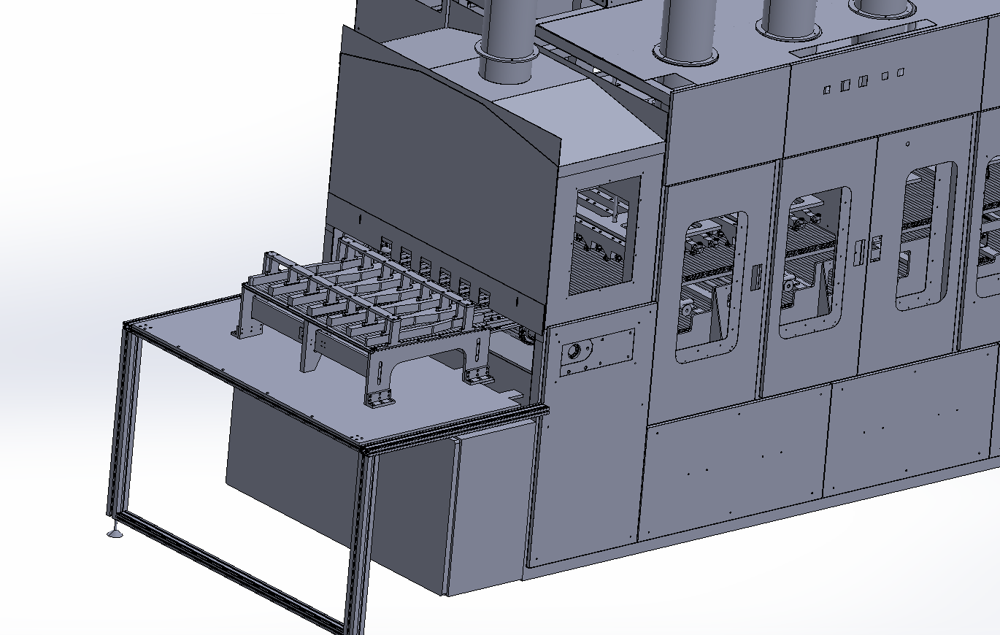

Case Study 05 · Power Transmission / Conveyance Design
Conveyor Infeed Upgrade
Redesign for serviceability and supply-chain resilience

Problem
A multi-lane conveyor infeed assembly relied on a specialty belt style that was difficult to source and had long lead times. Worse, the design didn't allow any single lane to be serviced independently — fixing one lane required disassembling the entire infeed assembly, driving extended downtime and maintenance effort.
My Role & Constraints
I owned the full retrofit redesign of the infeed's drive train and conveyance system.
Approach & Key Decisions
- Redesigned the drive shaft, idler shaft, sprockets, and conveyance system around a more widely available, standardized chain type.
- Designed the new conveyance system so each lane can be serviced independently, without disturbing the other lanes.

Expected Outcome
Design and fabrication are complete; installation is pending. Once installed, this redesign is expected to:
1-of-6Lanes serviceable independently, without full disassembly
↓Labor hours required per service event
↓Spare-parts lead time (standardized chain type)
Skills Demonstrated
Mechanical Power Transmission Design
Serviceability / Maintainability Design
Supply-Chain-Aware Design Decisions
DFM